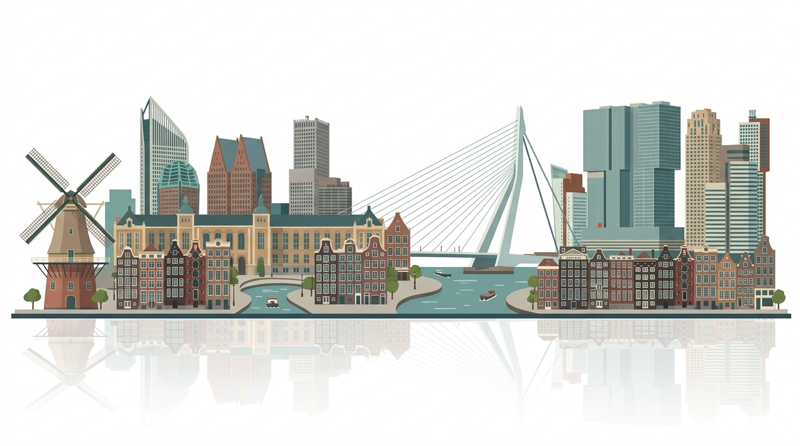

Step into Europe's high-tech semiconductor powerhouse. Pursue globally top-ranked English-taught Master's degrees at TU Delft, University of Amsterdam, and TU Eindhoven, secure the 1-year Zoekjaar post-study work visa, and join world leaders like ASML and Philips.
Abbacy Global Group is Hyderabad's premier Netherlands overseas education consultancy at Himayatnagar. We provide end-to-end admission guidance for prestigious Dutch research universities (TU Delft, Univ of Amsterdam, Erasmus Rotterdam, TU Eindhoven), Holland Scholarship applications, university-sponsored IND visa filing, and Zoekjaar post-study career orientation with 99% visa success.
Get your profile evaluated for TU Delft, Univ of Amsterdam, Erasmus & TU Eindhoven with our European Admissions Director.

Dutch research universities consistently rank in the Global Top 100 with state-of-the-art laboratories and direct corporate partnerships.
The top universities in the Netherlands for Indian students are Delft University of Technology (TU Delft) (QS #49, global engineering leader), University of Amsterdam (UvA) (QS #53, AI and data science pioneer), Erasmus University Rotterdam (home to Rotterdam School of Management RSM), Eindhoven University of Technology (TU/e) (heart of Brainport semiconductor hub), and Wageningen University (#1 globally in agricultural sciences).
Ranked #49 globally, TU Delft is Europe's premier engineering institution. World-renowned for Computer Science, Aerospace Engineering, Robotics, and Civil Infrastructure with extensive industry links to ESA, Airbus, and tech firms.
The largest university in the Netherlands and ranked #53 worldwide. A European epicenter for Artificial Intelligence, Machine Learning (Qualcomm-UvA Lab), Data Science, Economics, and Social Sciences situated in vibrant Amsterdam.
Home to the world-renowned Rotterdam School of Management (RSM). Celebrating Triple Crown accreditation (AACSB, EQUIS, AMBA), Erasmus offers elite programs in International Finance, Supply Chain Logistics, and Global Business.
Located in the heart of "Brainport Eindhoven", TU/e is the technical backbone for semiconductor giant ASML, Philips, and NXP. Over 80% of graduates secure tech placements before completion due to direct on-campus corporate labs.
Ranked #1 globally for Agriculture, Food Science, and Environmental Sustainability. Wageningen attracts top researchers and students targeting Food Valley innovation, bio-pharmaceuticals, and climate engineering.
Founded in 1614, Groningen is a top 100 global research university celebrated for Energy Transition, Medical Sciences, and Computing Science. A lively student city where 1 in 4 residents is a student, ensuring vibrant student life.
Detailed cost breakdown for 2026 academic intakes with scholarship options and part-time earnings.
| Program / Expense Type | Annual Cost in EUR (€) | Approx Cost in INR (₹) | Course Duration | Work & Post-Study Rights |
|---|---|---|---|---|
| Master's in Engineering, CS & AI (TU Delft / TU/e) | €15,000 – €21,000 | ₹13.8 – 19.5 Lakhs | 1 to 2 Years | 1-Year Zoekjaar Visa |
| Master's in Business, Finance & Supply Chain (RSM) | €14,000 – €22,000 | ₹13.0 – 20.4 Lakhs | 1 Year (12 Months) | High Corporate Starting Pay |
| Bachelor's Degrees (WO / HBO Applied Sciences) | €9,000 – €15,000 / yr | ₹8.3 – 13.9 Lakhs / yr | 3 to 4 Years | Zoekjaar Upon Graduation |
| Monthly Living Expenses (Housing, Food & Bike) | €850 – €1,200 / mo | ₹78,000 – 1,11,000 / mo | Per Month | 16 hrs/wk part-time offset |
| IND Financial Requirement (Living Maintenance) | €12,180 / year | ≈ ₹11.2 Lakhs | Living Fund Proof | Bank sanction letter accepted |
Unlike countries with rising tuition of ₹30–45 Lakhs per year, Dutch research universities offer world top-50 quality at €14,000–€19,000/year. Coupled with the NL Scholarship (€5,000) and Brainport starting tech salaries of €45,000–€58,000/year, Indian students recoup their entire study investment within 10 to 14 months of graduation.
How Hyderabad IT, Computer Science, and Engineering graduates transition directly into Europe's semiconductor and tech elite.
Graduates of Dutch Bachelor's and Master's programs are granted a 1-year Zoekjaar (Orientation Year) residence permit with full, unrestricted work authorization. Brainport Eindhoven and the Randstad region host ASML, Philips, NXP, Booking.com, and Uber, offering entry-level engineering salaries of €45,000–€58,000 and direct transitions into the Highly Skilled Migrant PR visa scheme.
The Zoekjaar (Orientation Year) gives international graduates 12 months to work freely in the Netherlands without employers needing to sponsor a separate work permit, making you as easy to hire as an EU citizen.
Eindhoven's Brainport region produces the world's most sophisticated extreme ultraviolet (EUV) lithography machines via ASML. Thousands of mechanical, software, embedded systems, and data engineers find top-paying roles here.
When hired under the Highly Skilled Migrant scheme, graduates benefit from a reduced starting salary threshold (€2,801/month for Zoekjaar holders). After 5 years in the Netherlands, you qualify for Dutch Permanent Residency / EU Long-Term Residency.
The Netherlands features a generous statutory minimum wage of €13.27/hour. Students working the permitted 16 hours per week earn approximately €850 to €950 per month, covering the vast majority of room and board costs.
The Netherlands is the most English-proficient non-native English country in the world. Academic lectures, research papers, public transport, government services, and corporate workplaces operate comfortably in English.
Abbacy Global coordinates directly with leading Indian nationalized and private banks (SBI, HDFC Credila, Axis Bank, Prodigy Finance) to sanction education loans for Dutch universities without property collateral for eligible candidates.
Our counselors in Himayatnagar guide you through the Dutch IND institutional immigration route with a 99% visa record.
Dutch student visas (MVV / VVR) are applied for on your behalf directly by your host university to the Dutch IND (Immigration and Naturalisation Service). Once IND approval is granted (typically within 2 to 4 weeks), you schedule a brief appointment at VFS Global Hyderabad to collect your entry visa sticker.
Receive your admission offer from TU Delft, Univ of Amsterdam, Erasmus Rotterdam, or TU Eindhoven. Confirm your seat and pay the initial tuition deposit.
Abbacy counselors thoroughly audit your financial evidence: bank statements, loan sanction letter, or direct university living cost transfer to satisfy Dutch IND requirements.
The Dutch university submits your Combined Residence Permit (TEV) petition directly to the IND in the Netherlands. Decisions are issued swiftly with zero consular interview stress.
Book your passport submission slot at VFS Global Hyderabad. Collect your MVV visa sticker within 5 to 10 days and board your direct or 1-stop flight to Amsterdam Schiphol.
Read how Hyderabad students reached top Dutch institutions through Abbacy Global Group.
"Abbacy Global made my dream of studying at TU Delft possible. The team in Himayatnagar handled my Numerus Fixus application, motivated statement of purpose, and IND immigration paperwork with zero friction. Now working in Eindhoven with a top high-tech firm. Best overseas education consultancy in Hyderabad by far!"
Key information for students and working professionals from Telangana and Andhra Pradesh.
Most Dutch research universities require an IELTS Academic score of 6.5 (with minimum 6.0 in each subscore) or TOEFL iBT 90–92+. Some universities of applied sciences also accept Duolingo English Test (DET 115–125+) or PTE Academic (62–65+). Abbacy Global evaluates your test scores for free and guides you toward universities offering score waivers where applicable.
The Netherlands has two distinct higher education systems: Research Universities (WO, such as TU Delft, UvA, Erasmus) focus on independent academic and scientific research with 1 to 2-year Master's programs. Universities of Applied Sciences (HBO, such as Fontys, Saxion, HAN) emphasize practical, industry-driven training with mandatory paid internships. Both degree types qualify for the 1-year Zoekjaar work visa.
The NL Scholarship (formerly Holland Scholarship) is funded by the Dutch Ministry of Education and offers non-EEA students a one-off grant of €5,000 in their first year of study. Applications are submitted directly via participating Dutch universities during the admission cycle. Abbacy Global assists eligible Hyderabad applicants with early scholarship applications to maximize success.
Yes. Non-EU students with a valid residence permit can work part-time for up to 16 hours per week during term time, or full-time during the summer months (June, July, August). Your employer must obtain a simple, free work permit (TWV) on your behalf. Dutch statutory minimum wages are approximately €13.27/hour, helping students easily cover monthly groceries and transport.
Our head office is centrally located at 302-A, 3rd Floor, Aaltos A&M Trade Centre, Himayatnagar, Hyderabad 500029. We are conveniently situated within 15 minutes of Ameerpet, Kukatpally, and Dilsukhnagar. Free in-person consultations are available Monday to Saturday, 9 AM to 7 PM. Call +91 83097 13212 to book your free session.